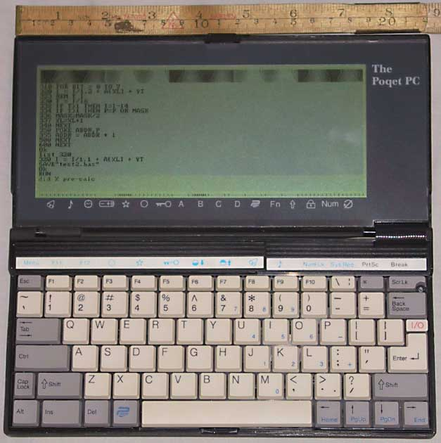
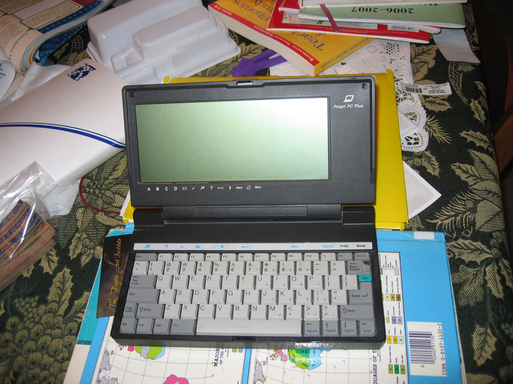
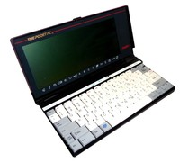

Poqet PC
Credit-card-sized MS-DOS computer with PCMCIA.

Overview
The Poqet PC, introduced in 1989, was the first IBM PC-compatible palmtop computer capable of running MS-DOS at CGA resolutions. It measured just 9.5 × 4 × 1 inches and weighed 1.2 pounds, making it truly pocketable. A pair of standard AA batteries powered the device for weeks—even months—thanks to pioneering power-management techniques, including halting the CPU between keystrokes and maintaining RAM state in a deep-sleep mode. Its “instant-on” capability allowed users to resume exactly where they left off without booting, a radical departure from the slow startup of contemporary laptops.
The Poqet PC featured an NEC V30 (or 80C88) processor, 640 KB of RAM, 1 MB of ROM containing MS-DOS 3.2, GW-BASIC, and a suite of personal information management applications. The reflective supertwist LCD displayed 25 lines by 80 characters, enabling standard DOS applications to run unmodified. Two PCMCIA Type I slots accepted solid-state memory cards for file storage, and a serial port provided connectivity with desktop machines. The keyboard, though small, offered full-travel tactile keys and dedicated function keys, earning praise for its usability.
Despite a price of US$2,000—equivalent to over $4,500 today—the Poqet PC garnered strong interest from enterprise and government users who required a portable DOS environment. Its design influenced subsequent palmtops like the Hewlett-Packard 95LX and demonstrated that aggressive power management could deliver true all-day (and all-week) mobile computing. The Poqet PC remains a seminal artifact in the history of mobile interaction, illustrating how carefully engineered suspend-resume behavior and frugal hardware can transform user experience.
Deep dive
Poqet Computer Corporation was founded in 1987 by John Fairbanks, David Wharton, and other former Convergent Technologies engineers. The Santa Clara, California-based company set out to create a pocket-sized, fully PC‑compatible machine that could run standard DOS software. The Poqet PC was unveiled at Spring COMDEX in 1989 and began shipping later that year, beating competitors such as the Atari Portfolio to deliver a complete DOS environment in a handheld form factor.
The Poqet PC uses an NEC V30 microprocessor (a CMOS 8086 variant) running at 7.15 MHz, with 640 KB of DRAM (512 KB available to applications) and 1 MB of ROM holding MS-DOS 3.2, GW-BASIC, and built‑in PIM applications (phone book, notepad, calculator, clock). Its monochrome reflective supertwist LCD provides 640×200 pixel CGA‑compatible graphics in a 25‑line × 80‑column text mode. Two PCMCIA Type I slots accept SRAM cards up to 512 KB each for nonvolatile storage. A full‑travel 78‑key keyboard delivers tactile feedback, and an RS‑232 serial port (plus an optional dock with parallel) handles connectivity. The machine is powered by two AA alkaline batteries; aggressive power management—including stopping the CPU between interrupts and maintaining RAM in deep sleep—extends battery life to 30–100 hours of active use and weeks of standby. A supercapacitor preserves memory for a few minutes during battery changes.
Keyboard input drives the system: every keystroke wakes the CPU just long enough to process the character before returning to sleep, so typing demands minimal power. The “instant‑on” feature lets users resume a session immediately without booting, making the device feel like a calculator. The reflective screen offers high contrast but no backlight, relying on ambient light. Built‑in software uses pop‑up menus and cursor keys, while standard DOS applications (WordPerfect, Lotus 1‑2‑3) run from memory cards, delivering a portable office. File exchange with a desktop is possible via LapLink over the serial port. This seamless, power‑thrifty interaction model removed the friction of startup delays and constant saving, redefining what a pocket computer could be.
Priced at around US$2,000, the Poqet PC gained favor with business and government users but remained a niche product. In 1991 the company released the Poqet PC Plus with a backlit display and 1.5 MB of RAM. Facing financial pressures, Poqet Computer Corporation was acquired by Fujitsu Ltd. in 1992. Fujitsu formed Fujitsu Personal Systems and gradually phased out the Poqet brand, shifting focus to Windows CE pen tablets. The original Poqet PC was discontinued after the acquisition, but its engineering DNA influenced Fujitsu’s later mobile offerings.
The Poqet PC established the benchmark for MS‑DOS palmtops, directly inspiring the HP 95LX and subsequent HP palmtops that adopted similar power management and form factors. Its CPU‑halting technique and suspend‑resume architecture became standard in later laptops and handhelds, embodying the “always on, always connected” ideal. The use of PCMCIA slots foreshadowed the PC Card standard, while full DOS compatibility proved that pocketability did not mean sacrificing the PC software ecosystem. Today, the Poqet PC is recognized as a key milestone in HCI for its elegant integration of low‑power hardware and user‑transparent interaction, prefiguring modern smartphones and instant‑on devices.
Team & pioneers
- John Fairbanks. Founder and CEO of Poqet Computer Corporation
- David Wharton. Founder and VP of Engineering
- Poqet Computer Corporation. Developer and manufacturer
Media


Sources
- Poqet PC - Wikipedia
- Poqet PC (Classic Model) - The Centre for Computing History
- The Poqet PC user's guide - Computer History Museum
- Poqet PC Users Guide 1989 PDF - Bitsavers
- Poqet PC FAQ - Bryan Mason
- Digibarn Systems: Poqet PC
- Poqet PC - Obsolete Computer Museum
- Poqet PC Technical Developer's Manual - Chapter 1